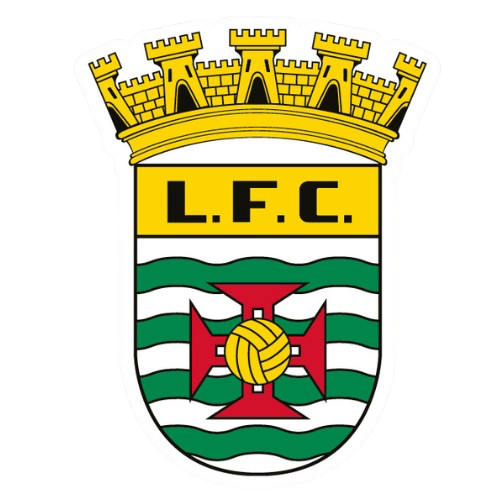

Elite nacional
Uma prova desenhada para receber alguns dos melhores atletas nacionais da modalidade.

Introduz o código de acesso do Atletismo para consultar esta apresentação reservada.
Leça da Palmeira · Época 2026/2027
Uma prova junto ao mar, em terra natural, criada para aproximar a elite nacional, a comunidade e uma nova geração de atletas.
Um cenário natural e diferenciador para devolver o corta-mato à sua essência: terreno, superação e proximidade. O percurso será pensado junto ao mar, sem necessidade de cortes de trânsito e com uma implantação concebida para não gerar impacto ambiental.
O programa combina excelência desportiva com participação aberta, criando um evento capaz de mobilizar públicos diferentes e gerar uma experiência contínua ao longo do dia.
Uma prova desenhada para receber alguns dos melhores atletas nacionais da modalidade.
Uma experiência aberta a atletas e praticantes de dentro e de fora do concelho.
Um momento de descoberta que aproxima escolas, famílias e futuros atletas.
A primeira edição valida o conceito, o percurso e o modelo de parceria. O objetivo é construir, em três anos, um evento de referência no corta-mato nacional.
Estreia do formato e validação da experiência desportiva e logística.
Reforço do cartaz, da participação popular e do alcance do evento.
Afirmação no calendário e projeção de Leça da Palmeira no atletismo nacional.
Investimento estimado
6.000€Um orçamento-piloto focado nas condições essenciais para uma prova credível, segura e memorável.
Atletas, equipas, famílias e participantes populares vindos de fora do concelho representam estadias, refeições, visitas e consumo local. O evento cria uma oportunidade concreta para projetar Leça da Palmeira e a sua frente marítima através do desporto.
Ao longo da zona da prova serão criados vários pontos de publicidade para dar visibilidade aos parceiros junto dos atletas, público e conteúdos produzidos durante o evento.
A camisola oficial acrescenta exposição durante a competição, nas fotografias e na utilização posterior pelos participantes. As posições comerciais podem ocupar frente, peito, costas e mangas, de acordo com o nível de parceria.
Destaque principal na frente e costas da camisola, presença no pórtico, zona premium do percurso e comunicação do evento.
Posição de destaque no peito ou costas, duas zonas publicitárias no recinto e integração na comunicação digital.
Uma posição na manga ou costas inferiores, uma zona dedicada no percurso e presença no painel de parceiros.
Presença partilhada numa zona publicitária, media wall e suportes digitais de agradecimento aos parceiros.
Valores indicativos, sem IVA, sujeitos a disponibilidade, combinação de formatos e validação final. Parcerias institucionais, técnicas, de sustentabilidade e media podem incluir apoio em espécie e proposta personalizada.
Procuramos parceiros fundadores para dar escala, credibilidade e continuidade ao Corta-Mato Matosinhos — do apoio institucional à operação, comunicação, presença na camisola e ativação de marca na zona da prova.